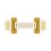
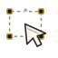
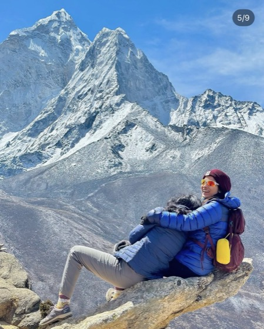
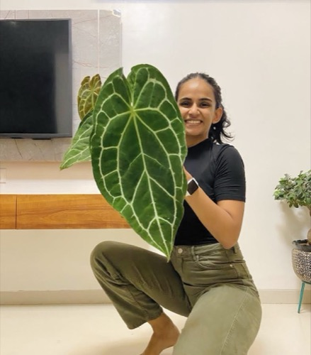
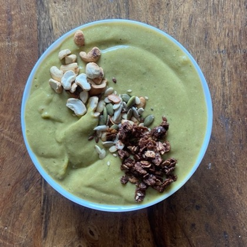
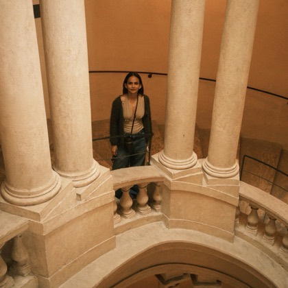
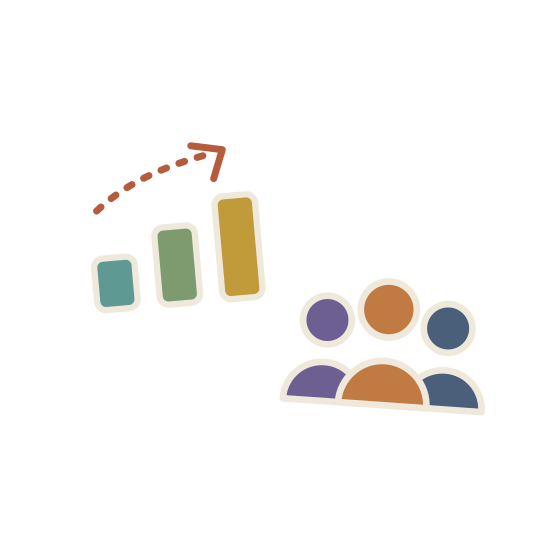
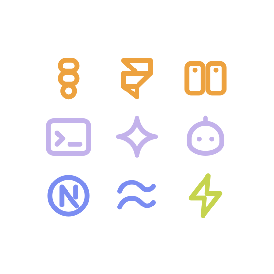

a little more ME
Design leader building products, systems and teams.








Hi, I’m
Design Manager and Product Design Leader who builds products, systems and the team behind both.
11+ years across B2C and B2B2C products